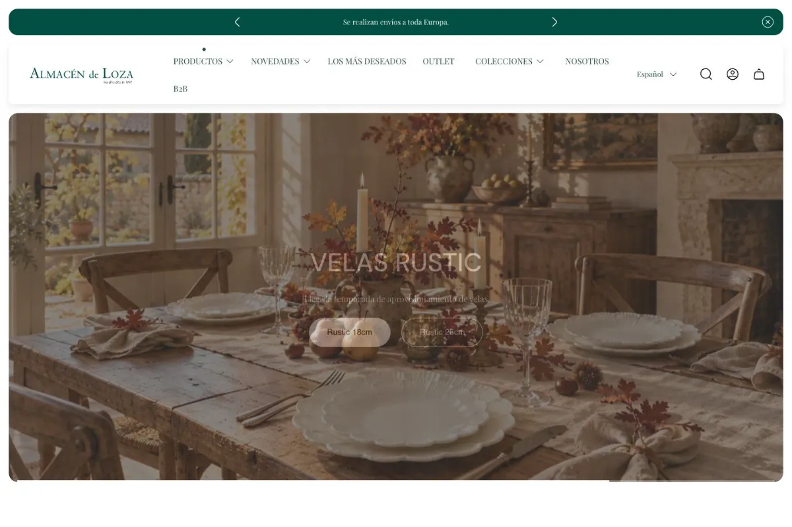

Migración completa
Migración de la tienda que operaba en WooCommerce.
MIGRARTRABAJO / 03 — EL ALMACÉN DE LOZA
Migración completa y nuevo diseño para una tienda que venía de WooCommerce y cuyo diseño no estaba convirtiendo.
Explorar la web ↗
01 / EL PUNTO DE PARTIDA
El Almacén de Loza venía de WooCommerce. El diseño anterior no estaba funcionando para convertir visitas en compras. Mi trabajo fue realizar toda la migración y diseñar por completo la nueva web.
02 / EL TRABAJO REALIZADO
Migración de la tienda que operaba en WooCommerce.
MIGRARDiseño completo de la nueva web del negocio.
REDISEÑAREl problema de conversión de la tienda anterior fue el punto de partida del proyecto.
REPLANTEAR03 / UNA VISIÓN CONECTADA
De la tienda anterior a una web diseñada de nuevo.
TU SIGUIENTE ELEMENTO
Cuéntanos qué necesitas construir o mejorar. Empezamos por el alcance.
Quiero algo así ↗